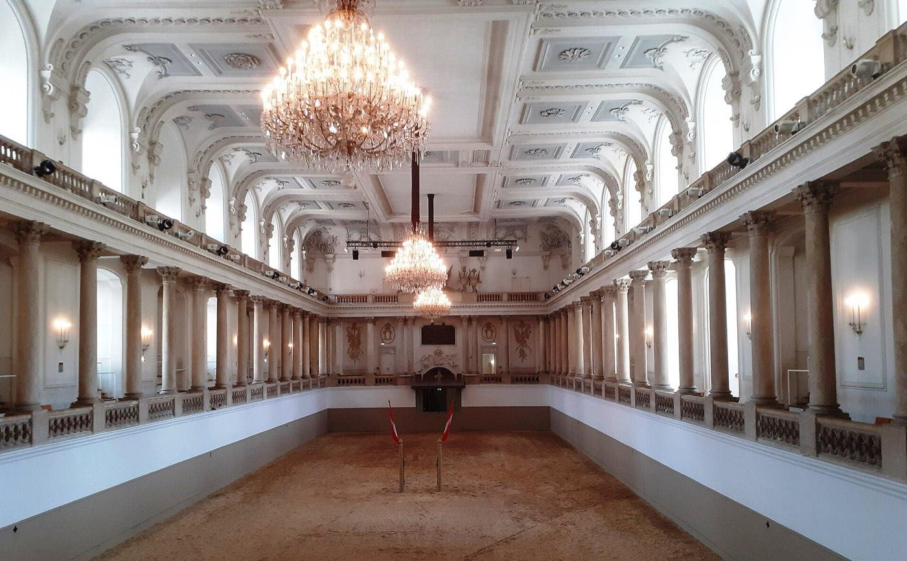
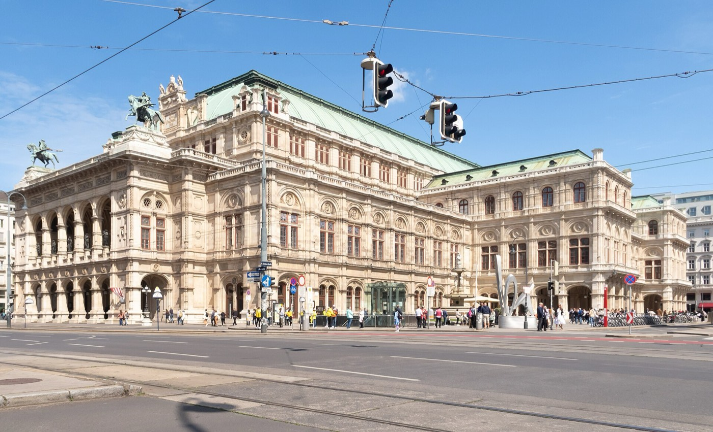
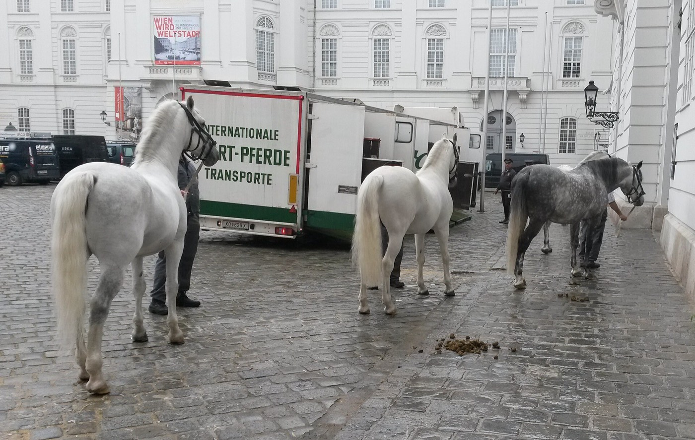

Vienna · 3 days
3 Days in Vienna: What You Actually Have to See
Vienna's must-see list is half buildings and half performances, and only the buildings are open every day. The State Opera, the Vienna Boys' Choir and the Lipizzaner stallions each hold one fixed slot in the week, and all three sit inside a season that ends on 30 June and does not restart until September. The palaces do not care what day it is. So the three days get built backwards from whichever performance the dates actually contain, and the imperial sightseeing fills in around it. Arrive in July or August and none of the three exists, which is the single most useful thing to know before booking a trip to the city that sells itself on them.

Three institutions carry Vienna's reputation, and all three run on a season instead of a set of opening hours. The State Opera plays from early September to the end of June. On 1 July the house goes into its summer break with no opera and no ballet until the season restarts in September, and only the guided tours run through the gap. The Vienna Boys' Choir sings the Sunday mass with the Hofmusikkapelle in the Hofburg chapel every Sunday from mid-September to the end of June, at 9:15am, with admission from 8am and tickets that have to be booked. The Spanish Riding School holds its morning exercise on Tuesday to Friday, roughly 10am to noon, and visitors come and go as they like during it. Then the stallions leave for the stud at Piber for the summer, which ends both the performances and the morning exercise until they come back.
Two of those three are mutually exclusive by weekday, and that is what shapes the trip. A Sunday morning belongs to the chapel. A Tuesday-to-Friday morning belongs to the horses. The opera is an evening, so it stacks on top of either without competing. Three days that include a Sunday and at least one weekday can hold two of the three; three days that run Friday to Sunday can hold two as well, but in the opposite order. Three days in the first week of August hold none of them, and a trip planned around the postcard version of Vienna will find the postcard closed.
Everything on the buildings side of the list opens daily and can be moved: Schönbrunn, the Belvedere, the Albertina, the Imperial Apartments in the Hofburg. One exception is worth building around. The Kunsthistorisches Museum closes on Mondays, running Tuesday to Sunday from 10am to 6pm and until 9pm on Thursdays, so a Monday in Vienna is a Belvedere day by default. Schönbrunn is the other fixed point. Entry is timed, the slot is chosen at the moment of booking, and from June through August those slots go two to three weeks out.
The performances run on a season; the palaces run every day. The State Opera, the Boys' Choir at the Hofburg chapel and the Lipizzaners each hold one slot in the week, and all three go dark from the end of June until September. Book the slot your dates can actually reach, put it in the calendar first, and arrange the palaces and galleries around it. In July and August there is no slot to build around, and the third day becomes something else entirely.
Day 1 — The inner city, arranged around the evening
The first day has an evening deadline attached to it, so it runs on foot and stays inside the Ring. Start at St Stephen's Cathedral, which is free to walk into and open from 6am to 10pm Monday to Saturday, from 7am on Sundays and public holidays. The nave costs nothing. The towers and the catacombs are ticketed separately, and the two towers are a choice and not a pair: the south tower is 343 steps on foot to a viewing room at 136 metres, while the north tower has a lift up to the Pummerin bell and runs daily from 9am to 7pm. Legs decide it. The south tower is the better view and the north tower is the one that can be done in fifteen minutes.
The Ringstrasse is the other thing to get done early, and it is best seen from a tram seat. Lines 1 and 2 run along it on an ordinary public transport ticket and pass the Opera, the Burgtheater, the City Hall, the Parliament and the university on the way round. Neither line closes the full circle on its own, so a complete lap means changing once, which is a minor cost. There is also a dedicated sightseeing tram sold at a sightseeing price. It buys commentary and a loop without the change, and it is the easy thing to skip: the buildings are the same buildings from either seat.
Give the afternoon to the Albertina, which sits at the top of a ramp behind the Opera and opens daily from 10am to 6pm, with late closing at 9pm on Mondays and Fridays. Its terrace looks straight down onto the Opera and the roof of the Hotel Sacher, and it is the best free-standing view of the Ring's south side. Then the evening. Standing room at the State Opera is the cheapest serious night out in the city and it is genuinely worth the effort of getting it.
The must-sees
Everything inside the Ring and on foot, with the evening booked before the day starts.

Day 2 — The Hofburg, and whichever slot the morning holds
The whole of day two happens inside one complex, which is why the morning slot can be allowed to dictate it. The Hofburg was the Habsburg winter residence for six centuries and it is not a palace so much as a district with a palace's name, holding the Imperial Apartments, the chapel, the riding school, the treasury and the national library between its courtyards.
On a Sunday, the morning is the Hofburgkapelle. The Vienna Boys' Choir sings the mass there with members of the State Opera orchestra and the men's chorus, at 9:15am, from mid-September to the end of June. Admission starts at 8am and the tickets have to be booked in advance. It is a church service and not a concert, which catches people out; the choir is heard more than it is seen, and the mass runs its full length.
On a Tuesday, Wednesday, Thursday or Friday in season, the morning is the Lipizzaners instead. Morning exercise runs from about 10am to noon in the Winter Riding School, and it is training rather than performance: the riders work the stallions through relaxation and muscle work to classical music, visitors enter and leave whenever they like, and the airs above the ground that the evening performance is famous for are practised rarely and mostly not on show. It costs a fraction of the performance ticket and it is the better use of a morning for most people. Anyone who specifically wants the levade and the capriole should book the performance and accept the price.
The Imperial Apartments and the Sisi Museum take the middle of the day, open daily from 10am with last admission at 4:30pm. The apartments are the Franz Joseph and Elisabeth rooms; the museum is a long, well-made argument that the empress the merchandise is built on was a considerably stranger and unhappier figure than the merchandise suggests. Note that the Silver Collection on the same ticket has been closed for some time. Finish across the Ring at the Kunsthistorisches Museum, whose Bruegel room is the largest collection of his paintings anywhere and the reason to go. On a Monday it is shut, and the day ends at the Belvedere instead, with day three rearranged to match.
The must-sees
One complex, one long day. The first stop is set by the day of the week, not by preference.

Day 3 — Schönbrunn, the U4, and Klimt
Day three leaves the centre, and the U4 line does more work than the map suggests. It runs through Schönbrunn, Kettenbrückengasse at the foot of the Naschmarkt and Karlsplatz in one straight ride, which turns three separate errands into one line and no changes.
Book the earliest Schönbrunn slot going. Entry to the palace interior is timed, the slot is fixed when the ticket is bought, and in summer they are gone two to three weeks ahead. The palace opens at 8:30am daily and the last entry is 45 minutes before closing, which lands anywhere between 5pm and 6pm depending on the season. The tour of the piano nobile takes a bit over an hour. What people underestimate is the park: it is free, it opens at 6:30am and stays open until dusk, and the walk up the hill to the Gloriette for the view back down over the palace and the city is the part most worth the morning. The maze, the Privy Garden and the Orangery Garden are ticketed separately and are all skippable on a three-day trip.
Take the U4 back for lunch at the Naschmarkt, and check the day first. The stalls run Monday to Friday from 6am to 9pm and Saturday from 6am to 6pm, and the market is closed on Sundays with only the restaurants trading. Saturday is the day it is worth planning for, because Austria's largest flea market sets up alongside it from 6:30am to 2pm.
The Upper Belvedere closes the trip. It is open daily, on timed entry, and it holds the largest Klimt collection in the world, with The Kiss permanently on show and never loaned out. The 9am slot sells out weeks ahead through the spring and summer. On a Monday this moves to day two and the Kunsthistorisches Museum moves here, which is the only rearrangement the week ever forces.
The must-sees
One metro line links all three, so the day never doubles back.
What to book, and what runs on a season
| What | Booking | So |
|---|---|---|
| State Opera, standing room | Online from 10am on the day, or the box office 80 minutes before curtain | €13 to €18. Season runs early September to 30 June; nothing plays in July or August |
| Vienna Boys' Choir, Hofburgkapelle | Booked in advance | Sundays only, 9:15am, admission from 8am, mid-September to the end of June. It is a mass, not a concert |
| Spanish Riding School | Morning exercise or performance, both booked ahead | Morning exercise Tuesday to Friday, about 10am to noon. The stallions are at Piber for the summer, so neither runs |
| Schönbrunn Palace | Timed entry, chosen at booking | Two to three weeks ahead from June through August. The park is free and opens at 6:30am |
| Upper Belvedere | Timed entry, online | Open daily. The 9am slot goes weeks ahead in spring and summer |
| Kunsthistorisches Museum | On the door is usually fine | Tuesday to Sunday 10am to 6pm, Thursdays to 9pm. Closed Mondays |
| St Stephen's Cathedral | Free for the nave, ticketed for the towers | 6am to 10pm Monday to Saturday, from 7am Sunday. North tower lift 9am to 7pm |
| Naschmarkt | Nothing to book | Closed Sundays. The flea market alongside runs Saturdays, 6:30am to 2pm |
What three days does not cover
Cutting deliberately beats rushing. These need more room than this trip's shape allows:
- The Wachau valley and Melk Abbey — the standard day trip out of Vienna, and it costs a full day of the three. It is a better fourth day than a substitute third one.
- Bratislava — an hour away by train and genuinely a different country, which is exactly why it does not belong in a three-day Vienna trip. It borrows the day from the city you came for.
- The MuseumsQuartier in depth — the Leopold holds the Schiele collection and the mumok sits beside it, and either one is an afternoon that this itinerary has already given to the Kunsthistorisches or the Belvedere.
- The Zentralfriedhof — Beethoven, Brahms, Schubert and Strauss are buried in one section of a cemetery the size of a district, out on tram 71. Worth a morning on a longer trip, and a long way to go on this one.
- A proper coffee house afternoon — Central, Sperl and Landtmann are not quick and are not meant to be. Sitting in one for two hours is the point of them, and this itinerary only leaves room for a rushed version.
Common questions about 3 days in Vienna
Is 3 days enough for Vienna?
Yes, for the city itself. Three days covers St Stephen's and the Ring, the Hofburg with the Imperial Apartments, the Kunsthistorisches Museum, Schönbrunn and its park, and the Belvedere with Klimt's The Kiss, with an evening left for the opera. What three days cannot absorb is a day trip. The Wachau valley, Melk Abbey and Bratislava each take a full day, and taking one leaves the city itself half seen. The second limit is the calendar and not the clock: if the dates fall in July or August, the opera, the choir and the Lipizzaners are all out of season and three days buys a palaces-and-galleries trip instead.
When does the Vienna Boys' Choir sing?
At the Sunday mass in the Hofburgkapelle, the chapel inside the Hofburg, every Sunday from mid-September to the end of June. Mass begins at 9:15am and admission starts at 8am, and tickets need to be booked in advance. The choir sings as part of the Hofmusikkapelle alongside members of the State Opera orchestra and the men's chorus. Nobody applauds, there is no programme, and the choir sings from the organ gallery high behind the congregation, so it is heard far more than it is seen.
How do you get standing room tickets at the Vienna State Opera?
Two ways, both on the day of the performance. They go on sale online at 10am, limited to two per registered account, and whatever remains is sold at the dedicated standing-room box office under the arcades on the Operngasse side of the building, which opens 80 minutes before curtain. Prices run from about €13 for the balcony to €15 for the gallery and €18 for the parterre. The season runs from early September to the end of June, so there is nothing to queue for in July and August beyond the guided tour.
Is the Spanish Riding School morning exercise worth it instead of the performance?
For most visitors, yes. The morning exercise runs Tuesday to Friday from about 10am to noon, costs considerably less, and lets you arrive and leave whenever you like instead of sitting through a fixed programme. What it is, honestly, is training: relaxation work and muscle conditioning set to classical music, in the same baroque hall. The school jumps that the Lipizzaners are famous for, the levade and the capriole, are not practised daily and mostly appear in the performance. Anyone who came specifically for those should book the performance. Neither runs in July or August, when the stallions are at the stud in Piber.
What is closed on Mondays in Vienna?
The Kunsthistorisches Museum, which is the one that matters for this itinerary. It runs Tuesday to Sunday from 10am to 6pm, with Thursdays until 9pm. Most of the rest of the list opens daily: Schönbrunn, the Upper and Lower Belvedere, the Albertina, and the Imperial Apartments and Sisi Museum in the Hofburg. So a Monday in Vienna is a Belvedere and Schönbrunn day, with the Kunsthistorisches pushed to another afternoon.
Do you need to book Schönbrunn Palace in advance?
For the palace interior, yes. Entry is timed and the slot is fixed when the ticket is bought, and from June through August those slots go two to three weeks ahead. The park is a different matter entirely: it is free, it opens at 6:30am and stays open until dusk, and the Great Parterre and the walk up to the Gloriette need no ticket at all. The palace opens at 8:30am daily with last entry 45 minutes before closing, which falls between 5pm and 6pm depending on the time of year. The maze, the Privy Garden and the Orangery Garden are ticketed separately and are the first things to cut.
Is the Vienna Ring Tram worth it, or should you take a normal tram?
Take trams 1 and 2. They run the Ringstrasse on an ordinary public transport ticket and pass the Opera, the Burgtheater, the City Hall, the Parliament and the university. The catch is that neither line goes all the way round on its own, so a full circuit means changing once. The dedicated sightseeing tram removes the change and adds commentary at a sightseeing fare. The view out of the window is identical either way.
Where can you see Klimt's The Kiss in Vienna?
At the Upper Belvedere, on the first floor, in the Vienna 1900 galleries. It is part of the permanent collection and is never loaned out, so it is there whenever the museum is. The Belvedere is open daily on timed entry and holds the largest Klimt collection in the world, which is the reason it earns a slot on a three-day trip while several better-known Vienna museums do not.
Tailored to your trip
Travelling to Vienna? Plan your trip around your real arrival and departure times.
Download iOS App